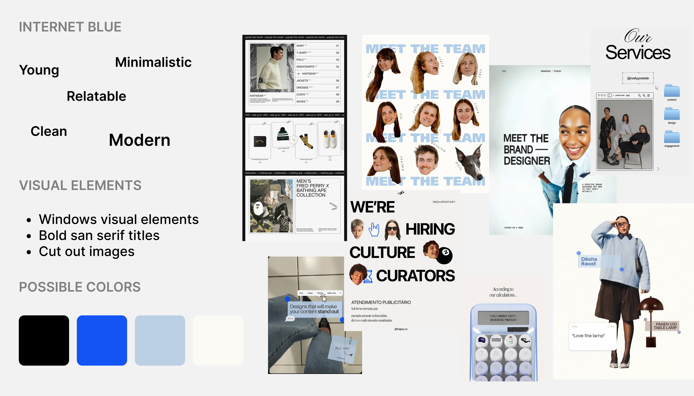
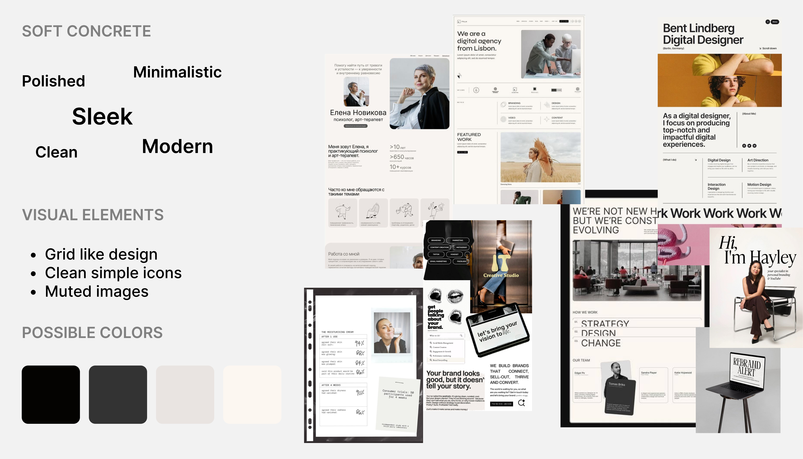
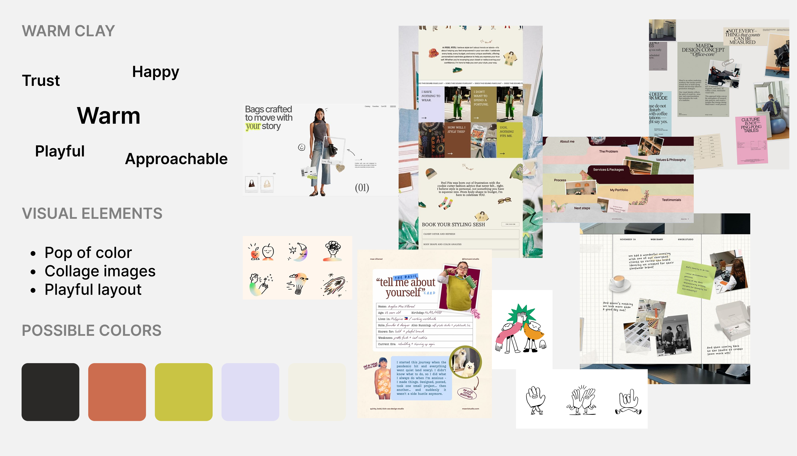

Website DesignLaunch Page StrategyCreative Direction
A launch website for a vetted fashion sourcing platform, built to turn a complex B2B
marketplace into a clear, credible experience for emerging designers, fashion brands, and
factory partners.
How it worksPricingFAQ
Fashion sourcing without the fog
Vetted factories. No guesswork. No surprises.
The Problem
Fashion founders need reliable factories, but sourcing often starts with hidden markups,
unclear supplier quality, oversized MOQs, and weeks of cold outreach. Existing options
either overwhelm brands with directories or hide the direct factory relationship behind
an agent.
The Solution
The Sourcing Club solves this by making trust visible. The launch page introduces a
guided project brief, vetted factory quotes, transparent pricing, and a clear Club
Standard so brands can understand the value before the marketplace opens.
Visual Directions
We explored three visual directions and surveyed the audience before locking the final
look: Soft Concrete, Warm Clay, and Internet Blue. Most people picked Internet Blue because
it felt young, internet-native, clean, and modern while still giving the sourcing platform
enough credibility to speak to brands and factories.
Full visual direction boards from the survey. Internet Blue became the selected direction.
Selected direction

Explored direction

Explored direction

Key Features
The website turns the platform story into a sequence a new visitor can follow: the sourcing
pain, the project posting flow, the factory verification system, a competitive comparison,
and transparent pricing for different levels of support.
Problem Framing
Hidden markups, late production surprises, MOQ mismatch, and weak trust signals become the opening narrative.
Guided Sourcing Flow
The how-it-works section turns marketplace behavior into four simple steps: post, quote, compare, produce.
The Club Standard
Factory badges explain what has actually been checked, replacing vague verification claims with visible criteria.
Launch Websites, Reimagined.
The Sourcing Club shows how a launch page can do more than announce a product. It can
reduce doubt, explain the shift, and give the right audience enough confidence to take
the next step.